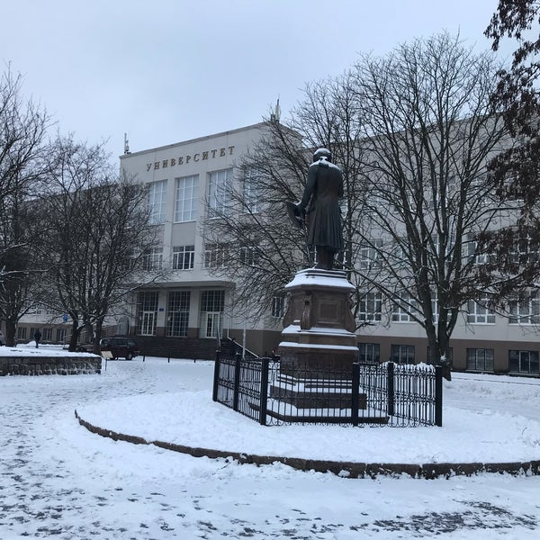
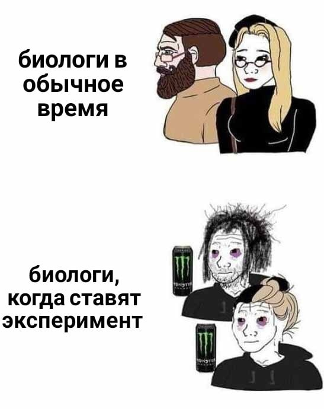

Университет был основан создателем Прусского герцогства Альбрехтом в 1544 году. Он был одним из старейших университетов Германии.
Первоначально университет назывался «Академия», но с 1656 года в память об основателе получил имя «Альбертина». Университет пользовался большими привилегиями и свободами, его преподаватели относились к высшим слоям общества, а студенты объединялись в корпорации со своей структурой и традициями. Кёнигсбергская академия «Альбертина» была устроена по образцу других немецких университетов и состояла из четырёх факультетов: трех «высших» — теологического (богословского), юридического и медицинского, и одного «низшего» — философского. Естественнонаучные дисциплины и математика преподавались на философском факультете.
Сейчас это здание принаджежит БФУ и является Высшей школой живых систем. Тут занимаются биологическими, химическими и смежными науками.
Наш университет в 1900
Наш университет сейчас
Сейчас в ВШЖС можно обнаружить биологов двух типов:
